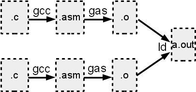

Memory Management
CS422/522 Lecture 4
8 September 2014
Last updated: 7 September 2014
Outline
- Recap
- Page Table Performance / Overheads
- Xv6 Code Walkthrough
- Page Faults
- Page Files
- Wrap-Up
Recap
- Segmentation
- Page Tables
- Page Sharing

Compiler, assembler, linking, loading
Outline
- Recap
- Page Table Performance / Overheads
- Xv6 Code Walkthrough
- Page Faults
- Page Files
- Wrap-Up
Page Table Overhead
Each memory action requires multilevel page walking.How to speed up?
Cache virtual to physical addresses
Translation Lookaside BUffer
- Maps virtual to physical
- x86 hardware managed
- Any challenges?
- Page directory changes
- Deleting mapped pages
Limited Memory / Large Addresses
- 64-bit address space
- 4KB page
- Potentially large page table!
- 2^12*2^10*2^10*2*10*2^10 bytes
Inverted Page Tables

How to speed up?
Hash upper bits of linear address to fixed location
OS handles misses.
Inverted vs Normal
- Inverted
- Fixed size
- Potentially more time for lookups
- Requires a means to handle page table faults
- Normal
- OS can enforce a ratio of PT to physical memory
- Scales with memory
- Quicker look ups
Outline
- Recap
- Page Table Performance / Overheads
- Xv6 Code Walkthrough
- Page Faults
- Page Files
- Wrap-Up
Last time
- Loaded flat memory code and data descriptors
- Entered 32-bit protected mode
- Loaded kernel data into memory
- Called kernel entry point
Code Overview
- Start paging with a temporary allocation
- Create real memory mapping in a new page table
- Enter new page table
- Enter new gdt with user and system descriptors
Bootstrapping
The first thing a kernel does is turn on paging...
1032 # By convention, the _start symbol specifies the ELF entry point.
1033 # Since we haven’t set up virtual memory yet, our entry point is
1034 # the physical address of ’entry’.
1035 .globl _start
1036 _start = V2P_WO(entry)
1037
1038 # Entering xv6 on boot processor, with paging off.
1039 .globl entry
1040 entry:
Bootstrapping
1041 # Turn on page size extension for 4Mbyte pages
1042 movl %cr4, %eax
1043 orl $(CR4_PSE), %eax
1044 movl %eax, %cr4
1045 # Set page directory
1046 movl $(V2P_WO(entrypgdir)), %eax
1047 movl %eax, %cr3
1048 # Turn on paging.
1049 movl %cr0, %eax
1050 orl $(CR0_PG|CR0_WP), %eax
1051 movl %eax, %cr0
Bootstrapping
1270 pde_t entrypgdir[]; // For entry.S
...
1306 // Boot page table used in entry.S and entryother.S.
1307 // Page directories (and page tables), must start on a page boundary,
1308 // hence the "__aligned__" attribute.
1309 // Use PTE_PS in page directory entry to enable 4Mbyte pages.
1310 __attribute__((__aligned__(PGSIZE)))
1311 pde_t entrypgdir[NPDENTRIES] = {
1312 // Map VA’s [0, 4MB) to PA’s [0, 4MB)
1313 [0] = (0) | PTE_P | PTE_W | PTE_PS,
1314 // Map VA’s [KERNBASE, KERNBASE+4MB) to PA’s [0, 4MB)
1315 [KERNBASE>>PDXSHIFT] = (0) | PTE_P | PTE_W | PTE_PS,
1316 };
Bootstrapping
1053 # Set up the stack pointer.
1054 movl $(stack + KSTACKSIZE), %esp
1055
1056 # Jump to main(), and switch to executing at
1057 # high addresses. The indirect call is needed because
1058 # the assembler produces a PC−relative instruction
1059 # for a direct jump.
1060 mov $main, %eax
1061 jmp *%eax
1062
1063 .comm stack, KSTACKSIZE
Setting up Virtual Memory
1211 extern char end[]; // first address after kernel loaded from ELF file
...
1216 int
1217 main(void)
1218 {
1219 kinit1(end, P2V(4*1024*1024)); // phys page allocator
1220 kvmalloc(); // kernel page table
...
1223 seginit(); // set up segments
...
1238 kinit2(P2V(4*1024*1024), P2V(PHYSTOP)); // must come after startothers()
...
Setting up Virtual Memory
2774 // Initialization happens in two phases.
2775 // 1. main() calls kinit1() while still using entrypgdir to place just
2776 // the pages mapped by entrypgdir on free list.
2777 // 2. main() calls kinit2() with the rest of the physical pages
2778 // after installing a full page table that maps them on all cores.
2779 void
2780 kinit1(void *vstart, void *vend)
2781 {
2782 initlock(&kmem.lock, "kmem");
2783 kmem.use_lock = 0;
2784 freerange(vstart, vend);
2785 }
Setting up Virtual Memory
2800 void
2801 freerange(void *vstart, void *vend)
2802 {
2803 char *p;
2804 p = (char*)PGROUNDUP((uint)vstart);
2805 for(; p + PGSIZE <= (char*)vend; p += PGSIZE)
2806 kfree(p);
2807 }
Setting up Virtual Memory
2810 // Free the page of physical memory pointed at by v,
2811 // which normally should have been returned by a
2812 // call to kalloc(). (The exception is when
2813 // initializing the allocator; see kinit above.)
2814 void
2815 kfree(char *v)
2816 {
2817 struct run *r;
2819 if((uint)v % PGSIZE || v < end || v2p(v) >= PHYSTOP)
2820 panic("kfree");
...
2827 r = (struct run*)v;
2828 r−>next = kmem.freelist;
2829 kmem.freelist = r;
...
2832 }
Setting up Virtual Memory
1754 // Allocate one page table for the machine for the kernel address
1755 // space for scheduler processes.
1756 void
1757 kvmalloc(void)
1758 {
1759 kpgdir = setupkvm();
1760 switchkvm();
1761 }
Setting up Virtual Memory
1735 // Set up kernel part of a page table.
1736 pde_t*
1737 setupkvm(void)
1738 {
1739 pde_t *pgdir;
1740 struct kmap *k;
1741
1742 if((pgdir = (pde_t*)kalloc()) == 0)
1743 return 0;
Setting up Virtual Memory
2834 // Allocate one 4096−byte page of physical memory.
2835 // Returns a pointer that the kernel can use.
2836 // Returns 0 if the memory cannot be allocated.
2837 char*
2838 kalloc(void)
2839 {
2840 struct run *r;
...
2844 r = kmem.freelist;
2845 if(r)
2846 kmem.freelist = r−>next;
...
2849 return (char*)r;
2850 }
Setting up Virtual Memory
1736 pde_t*
1737 setupkvm(void)
...
1744 memset(pgdir, 0, PGSIZE);
1745 if (p2v(PHYSTOP) > (void*)DEVSPACE)
1746 panic("PHYSTOP too high");
1747 for(k = kmap; k < &kmap[NELEM(kmap)]; k++)
1748 if(mappages(pgdir, k−>virt,
k−>phys_end − k−>phys_start,
1749 (uint)k−>phys_start, k−>perm) < 0)
1750 return 0;
1751 return pgdir;
1752 }
Setting up Virtual Memory
1723 static struct kmap {
1724 void *virt;
1725 uint phys_start;
1726 uint phys_end;
1727 int perm;
1728 } kmap[] = {
1729 { (void*)KERNBASE, 0, EXTMEM, PTE_W}, // I/O space
1730 { (void*)KERNLINK, V2P(KERNLINK), V2P(data), 0}, // kern text+rodata
1731 { (void*)data, V2P(data), PHYSTOP, PTE_W}, // kern data+memory
1732 { (void*)DEVSPACE, DEVSPACE, 0, PTE_W}, // more devices
1733 };
Setting up Virtual Memory
1675 // Create PTEs for virtual addresses starting at va that refer to
1676 // physical addresses starting at pa. va and size might not
1677 // be page−aligned.
1678 static int
1679 mappages(pde_t *pgdir, void *va, uint size,
uint pa, int perm)
1680 {
1681 char *a, *last;
1682 pte_t *pte;
1683
1684 a = (char*)PGROUNDDOWN((uint)va);
1685 last = (char*)PGROUNDDOWN(((uint)va) + size − 1);
1686 for(;;){
1687 if((pte = walkpgdir(pgdir, a, 1)) == 0)
1688 return −1;
...
Setting up Virtual Memory
1650 // Return the address of the PTE in page table pgdir
1651 // that corresponds to virtual address va. If alloc!=0,
1652 // create any required page table pages.
1653 static pte_t *
1654 walkpgdir(pde_t *pgdir, const void *va, int alloc)
1655 {
1656 pde_t *pde;
1657 pte_t *pgtab;
1659 pde = &pgdir[PDX(va)];
1660 if(*pde & PTE_P){
1661 pgtab = (pte_t*)p2v(PTE_ADDR(*pde));
1662 } else {
1663 if(!alloc || (pgtab = (pte_t*)kalloc()) == 0)
1664 return 0;
1666 memset(pgtab, 0, PGSIZE);
1670 *pde = v2p(pgtab) | PTE_P | PTE_W | PTE_U;
1671 }
1672 return &pgtab[PTX(va)];
1673 }
Setting up Virtual Memory
1678 static int
1679 mappages(pde_t *pgdir, void *va, uint size,
uint pa, int perm)
...
1689 if(*pte & PTE_P)
1690 panic("remap");
1691 *pte = pa | perm | PTE_P;
1692 if(a == last)
1693 break;
1694 a += PGSIZE;
1695 pa += PGSIZE;
1696 }
1697 return 0;
1698 }
Setting up Virtual Memory
1763 // Switch h/w page table register to the kernel−only page table,
1764 // for when no process is running.
1765 void
1766 switchkvm(void)
1767 {
1768 lcr3(v2p(kpgdir)); // switch to the kernel page table
1769 }
Setting up Virtual Memory
1613 // Set up CPU’s kernel segment descriptors.
1614 // Run once on entry on each CPU.
1615 void
1616 seginit(void)
1617 {
1618 struct cpu *c;
...
1624 c = &cpus[cpunum()];
1625 c−>gdt[SEG_KCODE] = SEG(STA_X|STA_R, 0, 0xffffffff, 0);
1626 c−>gdt[SEG_KDATA] = SEG(STA_W, 0, 0xffffffff, 0);
1627 c−>gdt[SEG_UCODE] = SEG(STA_X|STA_R, 0, 0xffffffff, DPL_USER);
1628 c−>gdt[SEG_UDATA] = SEG(STA_W, 0, 0xffffffff, DPL_USER);
...
1633 lgdt(c−>gdt, sizeof(c−>gdt));
...
1639 }
Setting up Virtual Memory
2787 void
2788 kinit2(void *vstart, void *vend)
2789 {
2790 freerange(vstart, vend);
2791 kmem.use_lock = 1;
2792 }
Wrap up
- Used a temporary page of 4 MB
- Last portion was used to construct new page table
- Entered new page table
- Entered new gdt with user and system descriptors
- Mapped the kernel page tables
Outline
- Recap
- Page Table Performance / Overheads
- Xv6 Code Walkthrough
- Page Faults
- Page Files
- Wrap-Up
Exceptions (Briefly)
- What are they? Something unexpected happen, force a call itno a special table
- What type of memory accesses would be exceptional?
- Page / segment defined but not present
(Page Fault / Segment Not Present) - Attempt to access paged memory of a higher privilege
(Page Fault) - Stack segment limit or presence violation
(Stack Exception) - Access invalid memory
(General Protection Exception)
- Page / segment defined but not present
Page Faults in Xv6
- Allocate memory at load (xv6/exec.c line 5934)
- There are
no expected page faults
Page Faults
- Valid but P not set in PTE
- OS receives an exception
- Passes to memory manager
- Memory manager:
- Allocates pages
- Retrieves data from disk
- Stores data to the pages
- Maps pages to processes' virtual memory
- OS returns execution back to fault causing instruction
Reasons for Page Faults
- Guard pages (page stack out of space)
- Copy on write
- Pages swapped to disk (over allocation)
- Data never loaded (on demand)
Outline
- Recap
- Page Table Performance / Overheads
- Xv6 Code Walkthrough
- Page Faults
- Page Files
- Wrap-Up
Memory Hierarchy
Over allocate and store some on disk!
First in, First out
- Use oldest page
- OS data structures? "Stack" of pages
- Issue(s): Ignores use of page
Second Chance
- Enhanced FIFO
- Check accessed bit:
- If unset, use page
- Else unset, test next oldest page
- Can also use write bits
- If unset, use page
- Else unset, test next oldest page
Least Recently Used
- Find page of oldest unaccessed memory
- Building into OS:
- Must check access bit -- frequency?
- Stack based:
- If accessed, push to top
- If need page, pop from bottom
- Timestamp:
- Add a timestamp field
- Find smallest and use
Modern Issues
Garbage collection and streaming media invalidate LRU.
- Not recently used -- LRU approximation
- Used-once -- LRU / FIFO
- New pages start on inactive list
- Promoted to active list after multiple use
- Pages reclaimed at the end of inactive list
- Occassionally garbage collect active list
Outline
- Recap
- Page Table Performance / Overheads
- Xv6 Code Walkthrough
- Page Faults
- Page Files
- Wrap-Up
Next Time
Wednesday 1:00PMTraps, Interrupts, and the System Call Interface